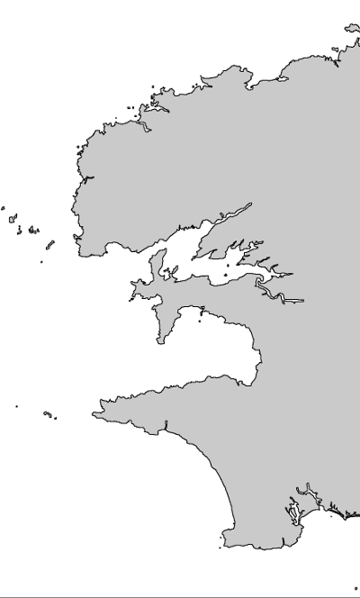
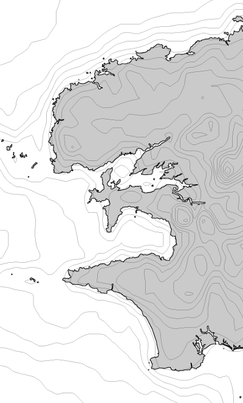
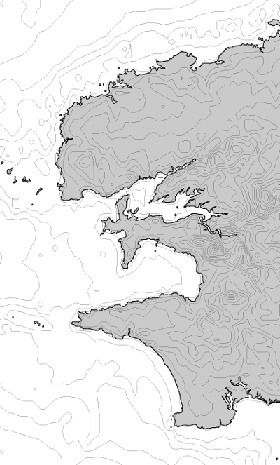
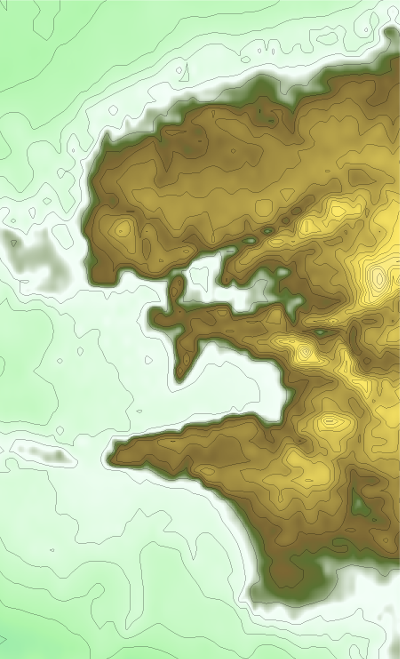

Generic Mapping Tool
Generic Mapping Tool est un outil permettant de générer des cartes. En entrée, on trouve le contour des côtes, Les données d’altitudes, des données personnelles,… L’outil connait la plupart des projections.
Installation
Commençons par installer les paquets. On en profite pour ajouter le contour des côtes en versions low, high et full
sudo apt-get install gmt gmt-gshhs-low gmt-gshhs-high gmt-gshhs-full
On va éditer le fichier .profile de notre home pour configurer le path :
nano ~/.profile
Ajoutez ces quelques lignes:
# configure gmt
GMTHOME=/usr/lib/gmt
if [ -d "$GMTHOME/bin" ] ; then
PATH="$GMTHOME/bin:$PATH"
fi
Vérifions tout ça: ouvrez une nouvelle fenêtre de console et lancez la commande :
echo $GMTHOME
vous devriez avoir comme réponse /usr/lib/gmt. Si rien ne s’affiche, lancez la commande suivante et rouvrez une nouvelle fenêtre de terminal :
echo "source ~/.profile" >>.bashrc
Premiers tests
Envoyez brutalement cette commande; on va l’expliquer après:
pscoast -Ggray -Jm6i -Wthin -B5 -V -P -Df -R-5/-4/47.7/48.8 >finistere.ps
Si le système se plaint de ne pas trouver pscoast, vous avez mal configuré votre path
Vous venez de créer un fichier finistere.ps qui ne contient qu’un contour de côtes. Pour ce qui est des paramètres:
- Ggray : le remplissage est en gris
- Jm6i : projection Mercator avec une échelle 6, les valeurs données en pouces
- Wthin : contour fin
- P : mode portrait
- V : le programme vous informe de ce qu’il fait
- Df : les côtes en full resolution
- R-5/-4/47.7/48.8 : C’est la fenêtre (5° ouest, 4° ouest, 47.7° nord, 48.8°nord)
Si vous n’aimez pas le format de fichier postscript, vous pouvez convertir tout ça en png :
ps2raster finistere.ps -A -P -Tg -V

La commande viens de nous créer finistère.png
- A : ajuste l’image à la taille du postscript
- P : mode portrait
- Tg : sortie png
- V : le programme vous informe de ce qu’il fait
Données d’altitude
Cette partie est un peu plus délicate car nous allons récupérer des données extérieures dont les données ETOPO.
Avant de commencer, sachez que pour configurer GMT, tout se passe dans le dossier /usr/share/gmt. Pour des raisons de facilité, j’ai donné les droits en écriture à tout le monde (point de vue sécurité, c’est pas ce qu’on fait de mieux) :
sudo chmod -R ugoa+w /usr/share/gmt
Les données topographiques seront placées dans le dossier /usr/share/gmt/dbase. Remarquez que l’on a déjà un fichier grdraster.info. C’est la description de nos données topographiques. On va le mettre de côté :
mv /usr/share/gmt/dbase/grdraster.info /usr/share/gmt/dbase/grdraster.info.old
touch /usr/share/gmt/dbase/grdraster.info
On va télécharger les données ETOPO2. ce sont les données d’altitude à 2 minutes d’angle. Soit vous retrouvez le fichier par votre moteur de recherche, soit, vous le récupérez ici : etopo2v2gi2LSB.zip. Décompressez le fichier et copiez le fichier ETOPO2v2gi2MSB.bin dans le dossier /usr/share/gmt/dbase. Renommez-le en etopo2.i2
Editer /usr/share/gmt/dbase/grdraster.info et insérez cette ligne:
1 "ETOPO2 global topography" "m" -R-180/180/-90/90 -I2m GG i 1 0 none etopo2.i2 L
On va maintenant pouvoir tester tout ça avec le script suivant :
#!/bin/sh
# Coast
pscoast -Ggray -JM6i -Wthin -B5 -V -P -Df -R-5/-4/47.7/48.8 -K >finistere2.ps
# Relief
grdraster 1 -R -Gfinistere2.grd
grdcontour finistere2.grd -J -S4 -C20 -O -R -V >>finistere2.ps
# Conversion png
ps2raster finistere2.ps -A -P -Tg -V

Si vous cherchez quelque choses de plus précis au niveau des données d’altitude, vous pouvez récupérer ETOPO1.i2, qui est le modèle à 1 minute d’angle ici : etopo1iceg_i2.zip
Décompressez et renommez le fichier etopo1iceg_i2.bin en etopo1.i2
Ajoutez la ligne suivante dans grdraster.info:
2 "ETOPO1 global topography" "m" -R-180/180/-90/90 -I1m GG i 1 0 none etopo1.i2 L
Testez le script :
#!/bin/sh
# Coast
pscoast -Ggray -JM6i -Wthin -B5 -V -P -Df -R-5/-4/47.7/48.8 -K >finistere3.ps
# Relief
grdraster 2 -R -Gfinistere3.grd
grdcontour finistere2.grd -J -S4 -C20 -O -R -V >>finistere3.ps
# Conversion png
ps2raster finistere3.ps -A -P -Tg -V

Un peu de couleur !
Dans le principe, avec GMT, on empile des couches. Or, un fichier postscript contient un header en début de fichier et un tailer en fin de fichier. Il faut donc préciser à la première couche de ne pas ajouter de trailer, préciser, lors des couches intermédiaires, n’ajouter ni header, ni trailer, et enfin, sur la dernière couche, ne pas écrire de header. Ceci se fait avec les options -O et -K :
- -K pour omettre le header
- -O pour omettre le trailer
Essayons le script suivant:
#!/bin/sh
grdraster 2 -R-5/-4/47.7/48.8 -Gfinistere3.grd
# Première couche: couleur
makecpt -Crelief -T-450/450/20 -Z > finistere3.cpt
grdimage finistere3.grd -J -Cfinistere3.cpt -P -E50 -K > finistere3.ps
# Seconde couche: côte
pscoast -JM6i -Wthin -B5 -V -P -Df -R -K -O >>finistere3.ps
# Dernière couche: lignes de niveaux
grdcontour finistere3.grd -J -S4 -C20 -O -R -V >>finistere3.ps
# Conversion en png
ps2raster finistere3.ps -A -P -Tg -V
Et le résultat (personnellement, je préfère sans la côte; dans ce cas commentez la commande pscoast):

Quelques remarques
Homogénéité des options
Il y a une grande homogénéité dans les options des commandes (par exemple l’option -R est plutôt universelle dans GMT)
Persistance des options
Les options dans les commandes sont persistantes. Prenons par exemple cette première commande (regardez bien l’option -R qui défini les bornes de la carte):
pscoast -JM6i -Wthin -B5 -V -P -Df -R-5/-4/47.7/48.8 >finistere.ps
Si maintenant on envoie cette commande :
pscoast -JM6i -Wthin -B5 -V -P -Df -R >finistere.ps
on obtient la même chose. Le fait de rappeler -R sans ses paramètres, rappelle les paramètres de la dernière commande. On aurait pu faire la même chose sur -J, -W, -D